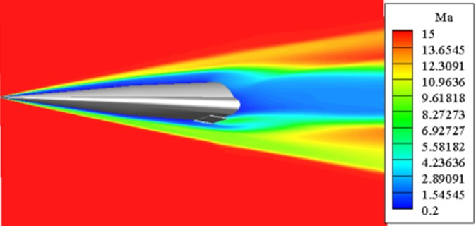

Home
Home
Hypersonic vehicles have an important strategic value for future space exploration and military
fields, and the multi-field coupling phenomenon of aerodynamic, structural, and thermal
interactions is one of the prominent features of high-speed vehicles. Multi-field coupling analysis
involves mutual coordination among multiple disciplines, high degree of nonlinearity, and high
complexity, which brings a series of new problems for the development of the vehicle and has
become an international research hotspot at present. Numerical simulation has become an effective
means to study hypersonic multi-field coupling problems with its advantages of low cost, short
cycle time, complete data, and wide range of applications, etc. Research on multi-field coupling
calculation methods and their key technologies, and the development of calculation platforms
can provide simulation tools and theoretical guidance for high-speed vehicle design, which is of
great significance to improve the performance of the vehicle.
Our group has carried out a lot of research on the dynamic mesh, interface data transfer and
coupling solution methods in multi-field coupling calculation.
For the dynamic mesh problem, the idea of separating rigid body motion and elastic deformation
is proposed: the nested mesh method is adopted for rigid body motion, which greatly enhances
the ability of the program to deal with the problem of large relative displacement between
structures. The wang digging algorithm and ADT data structure are adopted to make the nested
mesh module meet the requirements of high automation, versatility and efficiency. For elastic
deformation, it only needs to use the corresponding method to carry out grid update operation
in the sub-grid area considering elastic deformation, which reduces the storage capacity and
improves the computational efficiency; develops various time domain solution methods such
as loose coupling and tight coupling for multi-field coupling problems; introduces the radial
basis function interpolation method into the dynamic mesh and the interface data transfer
technology, to give full play to the advantages of its simple data structure and its capability
of adapting to large deformations. And the data interface is made to organically combine the
modules to establish a multi-field coupling calculation platform, which is applied to numerically
calculate several typical multi-field coupling problems of high-speed vehicles.
Including: HTV-2 class hypersonic lifting body vehicle payload after throwing release
non-stationary process, hypersonic wing-body combination of static gas bomb and aerodynamic
heating process of the coupling calculation, hypersonic conditions of the missile launch process,
HTV-2 class lifting body vehicle rudder maneuver dynamic response problems, and so on. The
innovative application of multi-field coupled analysis method on high-speed vehicles is realized.
The distribution of surface temperatures on the aircraft, derived from the coupled calculation of the three fields
The Mach number distribution on the aircraft surface at a 5° angle of attack.
Featured articles
[1] Lin Yanzhong, Chen Bing, Zhang Xu, Xu Xu. Influence of elastic deformation on unsteady multi-body separation[C]. Advances in the Astronautical Sciences, 13th International Conference of Pacific-Basin Societies, 2013, 146: 605-614.
[2]林言中, 陈兵, 徐旭. 径向基函数插值方法在动网格技术中的应用[J]. 计算物理, 2012, 29(2): 191-197.
[3] 张旭, 王利, 林言中, 徐旭. 超燃冲压发动机总体化性能分析[J]. 推进技术, 2014, 35(2): 157-165.
[4] 张旭, 姜军, 林言中, 徐旭. 超燃冲压发动机一维平均方法研究[J]. 推进技术,